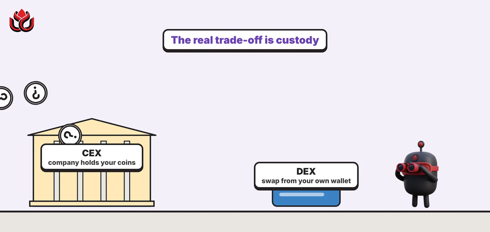
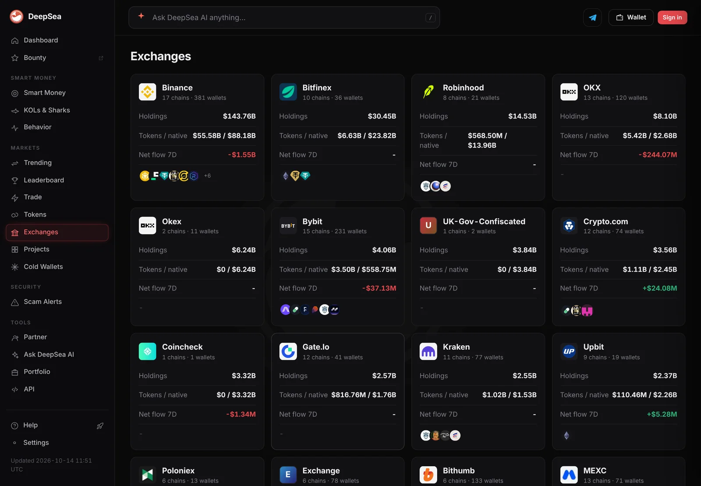
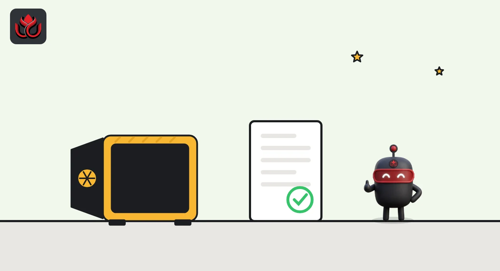
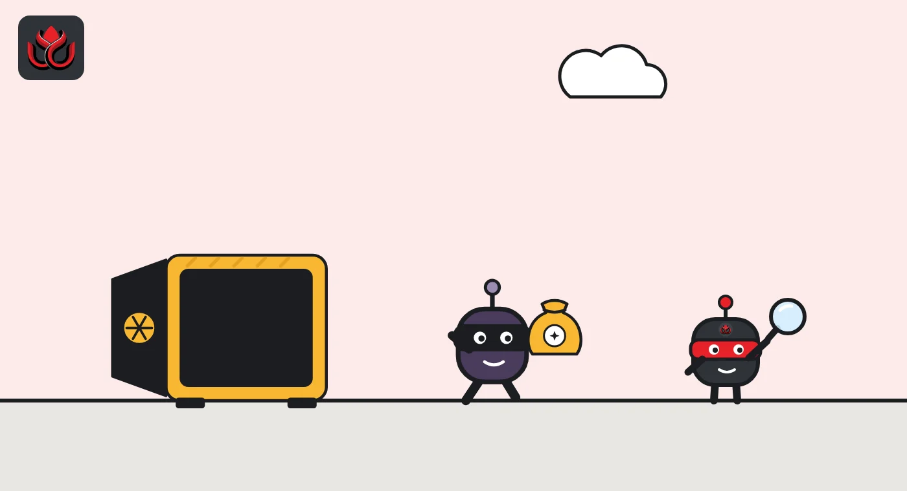

CEX vs DEX explained: who holds your crypto, and what can go wrong
A centralized exchange (CEX) is a company that holds your coins and matches orders in an order book; a decentralized exchange (DEX) is blockchain software that lets you swap from your own wallet against a pool of tokens. The real trade-off is custody: convenience and support on one side, control and responsibility on the other.

Key points
- On a CEX such as Binance or OKX, the company holds your coins. On a DEX such as Uniswap, coins stay in your own wallet until you swap.
- CEXs match orders in an order book. Uniswap uses liquidity pools and an automated market maker that sets prices from supply and demand in the pool.
- CEX risk is the company: hacks, freezes or failure. DEX risk is you and the code: lost keys, bad contracts, slippage and price impact.
- Proof of reserves helps check a CEX holds customer coins, but it is only a snapshot.
 What DeepSea's data shows
What DeepSea's data shows
Centralized exchanges hold a lot of crypto in one place. DeepSea's exchange tracker showed $144.40 billion in Binance-labeled wallets on November 2, followed by Bitfinex at $30.32 billion and Robinhood at $14.44 billion.
That concentration is what attackers target. DeepSea's hack list shows $3.40 billion taken from Binance hot wallets on Ethereum in late October and $387.50 million from Bitget in September. DeepSea counts only the Ethereum outflows it links to the Binance attacker, which is why its figure is lower than some other estimates.

Data: DeepSea (desea.io), checked November 2, 2026, 7:59 a.m. ET.
What is a centralized exchange (CEX)?
A centralized exchange is a company that runs a trading platform. You open an account, usually prove your identity, and deposit money or crypto. From then on, the exchange holds the coins in its own wallets and keeps a record of what you own. Binance, Coinbase, OKX, Bybit and Kraken are examples.
The upside is convenience: bank transfers in and out, customer support, password recovery and many extra products. Binance's copy trading service, for example, moves your funds into a separate account the exchange controls while copying another trader.
What is a decentralized exchange (DEX)?
A DEX is a set of smart contracts, programs that run on a blockchain, that lets people swap tokens without a company in the middle. Uniswap's help center describes its protocol as open source, peer-to-peer and self-custodial, meaning users keep control of their assets. It says no party can restrict access to the protocol itself.
You connect a crypto wallet, approve a swap and pay a network fee. The coins move straight from your wallet to the contract and back.
Uniswap says its smart contracts on Ethereum are immutable and cannot be upgraded, so the rules of each version stay fixed once deployed. Liquidity providers are paid differently across its v2, v3 and v4 designs. Because access is open, tokens with copied names can end up in pools too, so checking the contract address matters.

How do trades work on a CEX and a DEX?
On a CEX, buyers and sellers post orders in an order book, a list of bids and offers. The exchange's system matches them. Trades happen inside the company's database, not on a blockchain, until you withdraw.
On Uniswap, there is no order book. Each pool holds a pair of tokens supplied by liquidity providers, users who deposit tokens and earn fees. Uniswap says its automated market maker sets prices in real time from the supply and demand of each pair. You trade against the pool, not against another person.
Most users reach Uniswap through web interfaces, which add routing, warnings and default safety settings on top of the core contracts, according to its swap documentation.
Interfaces and apps built on Uniswap usually add two safety checks to each swap. If the transaction is still pending after its deadline, it is canceled. If the amount you would receive differs from the estimate by more than your slippage tolerance, it is canceled too. On a CEX, the equivalent tools are order types such as limit orders, which only fill at your price or better.
Who holds your coins?
This is the main difference. On a CEX, you hold a claim on the exchange. If the exchange is hacked, frozen or fails, your access depends on the company. In October 2026, Binance lost about $6.3 billion from its hot wallets, and Bitget lost $388 million earlier in the fall.
On a DEX, you hold your own keys. Nobody can freeze your wallet at the exchange level, but nobody can recover it either. If you lose your recovery phrase or sign a malicious approval, the loss is yours.

How can you check a CEX is holding customer coins?
Many large exchanges publish proof of reserves, a comparison of their on-chain wallets with total customer balances. OKX's PoR page showed bitcoin backed at 110% in its 48th report, and Binance publishes a monthly snapshot users can verify themselves. Binance notes its report is a snapshot, not a real-time view, and neither page says the check covers the company's other debts.
What does trading cost on each?
- CEX: a trading fee set by the exchange, often lower for bigger traders, plus withdrawal fees. Binance, for example, charges copy traders its normal VIP fee rate.
- DEX: a swap fee that goes to liquidity providers, plus a gas fee paid to the blockchain. Uniswap says gas fees pay for executing the transaction and affect how fast it is processed.
- Price impact: on a DEX, your own trade moves the pool price. Uniswap says deeper pools mean smaller impact, and it warns users before swaps likely to cause a big loss.
- Slippage: the price can move while your transaction waits. On Uniswap, you set a slippage tolerance, and the swap fails if the price moves past it.
Some DEXs also send part of their fees to token holders. Uniswap's fee switch is an example, covered in our Uniswap story.
What are the biggest risks of a CEX and a DEX?
CEX risks: hacks of hot wallets, frozen withdrawals, account closures, rules that differ by country, and the company itself failing. Proof of reserves reduces some of this uncertainty but does not remove it.
DEX risks: bugs in smart contracts, fake tokens with copied names, phishing websites, high price impact in small pools, and lost keys. Uniswap's own price impact guide says a larger impact means larger potential losses, and users who click "Swap Anyway" do so at their own risk.
CEX vs DEX: a quick comparison
- Who holds the coins: CEX, the company. DEX, your own wallet.
- How prices are set: CEX, an order book of bids and offers. Uniswap, a pool and an automated market maker.
- Access: CEX, an account and usually identity checks. Uniswap protocol, permissionless, though web interfaces add their own settings and checks.
- Costs: CEX, trading and withdrawal fees. DEX, a swap fee to liquidity providers plus gas, and price impact.
- If something goes wrong: CEX, customer support and the company's resources, if it is still solvent. DEX, usually no one to call.
- How to check backing: CEX, proof-of-reserves snapshots. DEX, pool balances are visible on chain at any time.
Uniswap's help page gives one example of a low-impact trade that lost just 0.053% to price impact. In shallow pools the figure can be far higher.
LC Insight analysis
This section is our reading of the facts above, not a statement of fact.
- We think the real choice is about custody, not features. On a CEX you trust a company's security and solvency; on a DEX you trust your own habits and the code.
- This fall showed the CEX side of that risk: Bitget in September and Binance in October. The DEX side is quieter but constant, through phishing and fake tokens that never make headlines.
- Proof of reserves narrows the trust gap for CEXs, but a monthly snapshot cannot warn users in real time.
What's next
- How often exchanges publish reserve snapshots after the Binance theft.
- Whether DEX front ends add more checks, which could make them behave more like CEXs.
- New rules on self-custody and DEX interfaces in the US and EU.
Frequently asked questions
Is a DEX safer than a CEX?
Neither is safe by default. A DEX removes the risk of a company holding your coins but adds the risk of losing your own keys or using buggy or fake contracts.
Do I need ID to use a DEX?
Uniswap describes its protocol as permissionless, so the contracts do not ask for ID. Web interfaces can add their own settings and checks, and centralized exchanges usually require identity checks.
Why did my DEX swap fail?
Uniswap cancels a swap if it passes its deadline or if the output moves beyond your slippage tolerance.
What is price impact?
It is the change in price caused by your own trade against a pool. Bigger trades in smaller pools move the price more.
Disclaimer. This article is based on public information and the sources listed below as of the update time shown. It is for information only and is not investment, legal or tax advice. Figures may change as companies and authorities publish new data.